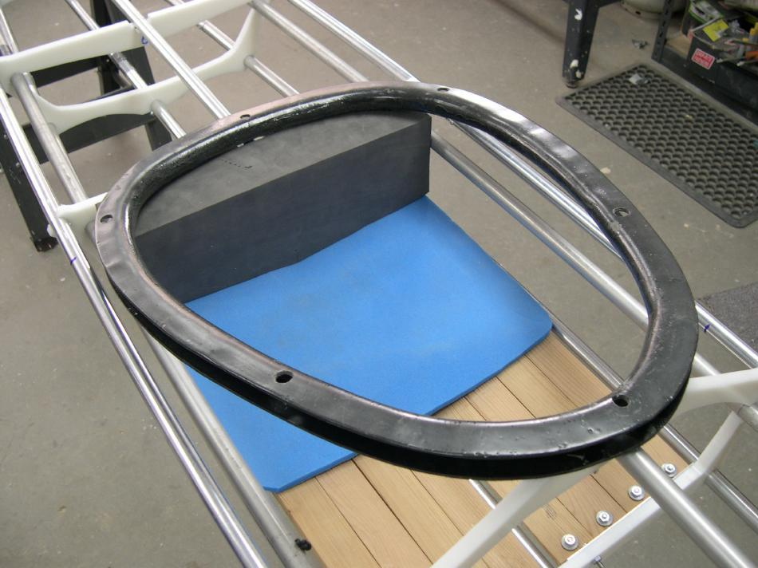

| Backrest / Seat Pad | Menu Last Page Next Page |
|

Backrest/Seat Pad - A 3/4" foam pad or a self-inflating cushion can be used to provide back comfort and to avoid direct contact with the comaing. A 1/2" closed cell pad serves as the seat and is designed to keep the paddler's center of gravity as low as possible. The 3"closed cell back pad pictured above is thicker than needed, but can be used for layback rolls over the coaming.
|
|